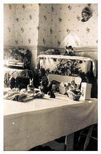
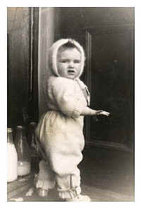
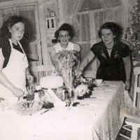
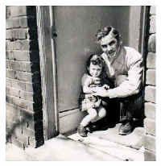
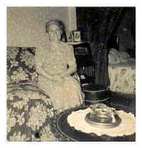

|
2179 LÉTOURNEUX,
MAISONNEUVE
In 1925, Charles and Ézilda moved into 2179 Létourneux.
The
Maisonneuve district was growing at the time, with many
factories going up, fine public
buildings such as the Marché Maisonneuve (1914) and the Morgan Public
Bath (1915), parks, cinemas, shops
and new housing for workers.
|

Marché Maisonneuve, 1930
To get to the
Marché Maisonneuve, Ézilda walked south down rue Létourneux,
went "across the track" (the railway) eastward
for a few dozen metres and reached the market from
the back. |
Morgan Public Bath, boulevard
Morgan
These public
baths were essential for hygiene, since the flats
had no bathtub (let alone a shower) and no hot water. They were
used by men; women preferred to wash
at home, "with a facecloth". |
Maisonneuve did indeed become an important working-class hub in Canada, nicknamed
the Pittsburgh of Canada because
of the intense economic and cultural activity there. There was no shortage
of work: the American Can Co, Dominion Textiles, J.P. Coats and Canadian
Steel Foundries plants, the Canadian Vickers dry docks, and the shoe
and food industries provided a living for
thousands of families in the district.
In a small, modest flat, Charles and Ézilda had five children,
three of whom reached adulthood: Arsène, Fabiola and Jacqueline. For each birth, straw was
spread on the floor and the woman in labour was laid on it, so as not to
soil the bed. Later (1947), Jacqueline would give birth to Nicole on the kitchen
table, for the same reason.
According to his children's baptism records, Charles worked as a
day labourer. In one record he describes himself as an "oiler". In his
marriage record he had given his trade as "plumber". When he joined
the army in 1914 he was listed as a "steam fiter". So, with 8
years of schooling, Charles worked at several trades to earn a living for himself and
his family. The children left school after elementary school to help
their parents by handing over a large part of their wages, that is,
"they paid board", keeping only a little pocket money. The
girls prepared their "trousseau" for the day they would
marry.
Ézilda lived more than forty years at 2179 Létourneux. In fact,
this flat had only three small rooms, plus a tiny
toilet room a few feet square. The
three rooms were a kitchen, at the end of the hall, and a double
parlour at the entrance, on the left. The front part served as a parlour
by day and as the girls' bedroom at night;
the other part was Charles and Ézilda's bedroom. There was not even a door on these two rooms,
so short was the space.
The parents' bedroom was so small that it was impossible to open the two
bottom drawers of the dresser at the foot of the bed. It held the only
wardrobe in the whole flat.
Curtains (a light sheer one and a heavier velvet one) could give
privacy between the two rooms, depending on need and the season.
The boy, Arsène, slept on a folding bed in the kitchen. By day the bed was
folded up and pushed against the wall, near the wringer washer. The bed and
the washer were covered with cloth covers to hide them a little.
No hot water and no bathtub; people could go to the Public
Bath to wash. Otherwise they washed "with a facecloth".
Heat
came from the wood stove in the kitchen. Electricity provided the lighting, which is why Ézilda
used the term "my light bill" when talking about her electricity
bill. The radio was the
only entertainment from the outside world. There
was a small one in the kitchen and a big radio set in the parlour.
A small storage space stood at the end of the
back balcony, and a shed at the bottom of the yard.
Firewood was stored there. When
Charles and Ézilda moved in, the land east of rue
Létourneux (behind the Marché Maisonneuve) was still wasteland.
The Consignys and their neighbours grew big vegetable gardens there. Later, Canadian Steel Foundries bought the land and fenced it in,
because trains ran on it to
deliver goods to the plant.
Ézilda
only traded her icebox for a refrigerator at the end of the 1950s.
She also bought a television, and she was very fond
of this new medium. But as for other modern things, that was another
matter: until the end of her life she preferred to use the
irons she received as wedding gifts (it took two, since one always
had to be heating on the stove while she used the other), her
old toaster, etc… When she
died, her children found at the bottom of the wardrobe the gifts (electric iron, electric frying pan,
kettle, and others), still brand-new in their
packaging.
When Ézilda made a cake, she measured her ingredients with always
the same
teacup, so she always got the same amounts.
She lined her pan with brown paper
cut from a grocery bag
before pouring in her batter. (a memory
of Nicole's, who watched her at work more than once) There
was only one small kitchen cupboard, and only the essentials: no waxed paper,
no measuring cup, etc... The era of consumption, and then of
overconsumption, had not yet begun...
The only modern comfort that
| PHOTOS OF THE
KITCHEN (they are not very good, but you can see
the details of the household equipment of the day, and Nicole's
"walker") |
|

(you can clearly see the top of the wood stove, with the
teapot that held hot tea all day and the other
water containers used to wash the dishes, the laundry, etc...
Above the warming oven, in the middle, are the salt and
pepper shakers. You can also clearly see the double cupboard and the short stretch of
counter with a sink on the left. There was only one drawer for
cutlery)
|

(you can see the coal scuttle, the garbage can and,
on the counter, the bread box and the citrus press)
|

One Easter morning
(you can see the washer and Arsène's folding bed)
|

Nicole
(the milk was kept cool between the 2 doors to the back balcony)
|
Rue
Ontario and its shops, and the Marché Maisonneuve, were very close.
She also bought from a "Juif" (Jew) (a travelling
salesman) who came by the houses regularly to offer the housewife
all the indispensable items. This peddler even gave credit, and Ézilda had an "account" with
him for decades. It was
the only form of credit available at the time, since women had no
personal access to credit, and neither did workers, for that matter.
Daily life followed the rhythm of the
factories. Their whistles, heard throughout the neighbourhood,
marked the workers' schedule
(arrival in the morning, noon, back to
work after lunch, and quitting time in the evening). Not to mention the church bells ringing the Angelus
(morning,
noon and evening) and the services, and the trains running on the
nearby railway (a little north of rue
Ontario).
All of it was steeped in various smells, including licorice (anise)
from the candy factory at the corner of Rouen and Lasalle.
 The
iceman carried up a big block of ice, leaving a trail of water
behind him in summer. The milkman and the baker also made their rounds
regularly. They all worked with horse-drawn carts, right
up to the mid-1950s. Soft drinks
were also delivered to the house; Ézilda had a fondness for
"kik", a cola-type drink. The
iceman carried up a big block of ice, leaving a trail of water
behind him in summer. The milkman and the baker also made their rounds
regularly. They all worked with horse-drawn carts, right
up to the mid-1950s. Soft drinks
were also delivered to the house; Ézilda had a fondness for
"kik", a cola-type drink.
Radio
took on an important place from the mid-1920s.
It offered news and entertainment.
The district also had fine cinemas: the Orléans on rue
Ontario, the Mercier and the Granada on rue Ste-Catherine.
Ézilda and her family went regularly.
An evening at the movies included the newsreel, a
short and two or three feature films. In
the 1940s a cinema chain offered, as a promotion, for a few cents more than the admission ticket,
a piece of a dinner service. That is how Jacqueline was able to add to her trousseau a very beautiful
18-place dinner service with the serving dishes (we
still have these dishes).
Later, Ézilda would also greatly enjoy television.
We do not know when the telephone was put in, but
she had one in the 1950s, and her number was in the
"Lasalle" exchange. In 1963, according to
the Lovell directory, her number was 259-2201.
In fact, Maisonneuve was a
working-class, French-Canadian district in the East End of Montreal.
"Going shopping in the West End"
at Eaton's and Morgan's was a special event, a yearly pilgrimage usually made
on a fine summer day. People
put on their Sunday best for this outing, hat and Sunday dress, not
forgetting the accessories, gloves, shoes and handbag, all white
between St-Jean-Baptiste Day and Labour Day, and dark the rest of
the year. They took the Ontario streetcar west.
The line ran straight to the terminus next to the
Anglican Cathedral, between the two big department stores. Ézilda
made sure not to "travel at workers' rush hour", because the
streetcars were packed then.
 Note that even to go shopping on nearby rue
Ontario, people dressed in their Sunday best. When Ézilda went out, she "se met sur son 36" (got all dressed up).
Besides changing her dress
(going out in the street in "a house
dress" was out of the question),
she put on make-up.
For this she opened a tiny medicine cabinet in the kitchen, between the back door and the
window (see photo opposite).
In one of its little drawers were her powder blush and her
lipstick. To put them on properly she used a small
mirror that she hung right beside it, on a nail put there for the purpose on an
upright of the window of the
door to the back balcony. That way she had natural light to
"give herself some colour" and look her best in public. (a memory
of Nicole's, who watched her do it more than once)
|

André, Nicole
front stairs
|

Nicole
front balcony
|

Nicole, Gérard
front porch
|

Jacqueline
(you can see the bedroom behind her)
|
|

Jacqueline, Nicole, Gérard
(they are in the parlour; the curtain hiding the bedroom is drawn)
|

Ézilda
(on her left the floor-model radio, then, behind the curtain, the
bed)
|

Jacqueline, Nicole
in the parlour
|

Jacqueline, Nicole
|
|
PHOTOS
TAKEN BY FRANCINE IN 2001 OF RUE LÉTOURNEUX |
|
 AT THE
CONSIGNYS'
AT THE
CONSIGNYS'